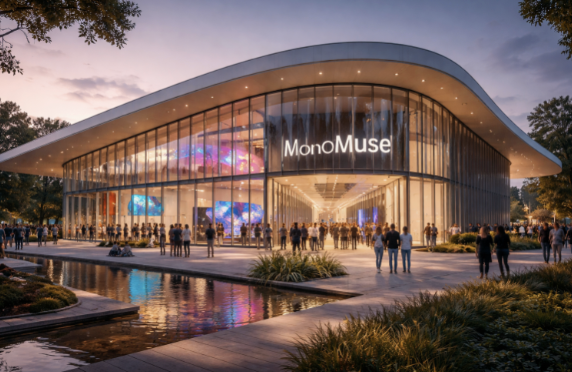

MonoMuse is dedicated to exploring the evolving relationship between art, technology, and society. Our mission is to inspire curiosity and creativity by showcasing innovative exhibitions that highlight how digital tools, emerging technologies, and human imagination shape the future of artistic expression.
MonoMuse serves artists, students, researchers, and the general public who are interested in the intersection of art and technology.